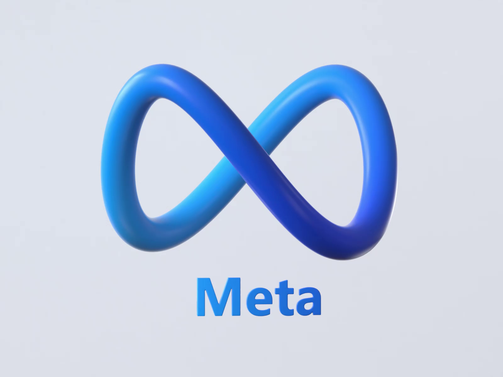

Overview
"In the past, the misuse of meta and other social media platforms' user data raised significant concerns regarding the manipulation of individuals' minds and the subtle control over their belief systems and behaviors. These platforms, initially designed to connect people and facilitate communication, inadvertently became powerful tools for data collection and analysis. As user data was harvested and meticulously analyzed, algorithms were developed to serve content that resonated with users' preferences, creating echo chambers that reinforced existing beliefs. This not only limited exposure to diverse perspectives but also perpetuated false information and extremist ideologies. The consequences of this phenomenon extended beyond the digital realm, influencing people's real-world decisions and actions. It became evident that the lines between genuine choice and algorithm-driven suggestion had blurred, raising critical questions about privacy, ethics, and the need for responsible technology development and regulation. "
Donald Trump campaign
"Donald Trump's 2016 presidential campaign used the harvested data to build psychographic profiles, determining users' personality traits based on their Facebook activity.[45] The campaign team used this information as a micro-targeting technique, displaying customized messages about Trump to different US voters on various digital platforms.[46] Ads were segmented into different categories, mainly based on whether individuals were Trump supporters or potential swing votes.[46] As described by Cambridge Analytica's CEO, the key was to identify those who might be enticed to vote for their client or be discouraged to vote for their opponent.[47] Supporters of Trump received triumphant visuals of him, as well as information regarding polling stations.[46] Swing voters were instead often shown images of Trump's more notable supporters and negative graphics or ideas about his opponent, Hillary Clinton.[46] For example, the collected data was specifically used by "Make America Number 1 Super PAC" to attack Clinton through constructed advertisements that accused Clinton of corruption as a way of propping up Trump as a better candidate for the presidency.[22] However, a former Cambridge Analytica employee, Brittany Kaiser, was asked "Is it absolutely proven that the Trump campaign relied on the data that had been illicitly obtained from Facebook?" She responded: "It has not been proven, because the difficult thing about proving a situation like that is that you need to do a forensic analysis of the database" "
Potential usage
"Russia In 2018, the Parliament of the United Kingdom questioned SCL Group director Alexander Nix in a hearing about Cambridge Analytica's connections with Russian oil company, Lukoil.[49] Nix stated he had no connections to the two companies despite concerns that the oil company was interested in how the company's data was used to target American voters.[49] Cambridge Analytica had become a point of focus in politics since its involvement in Trump's campaign at this point.[49] Democratic officials made it a point of emphasis for improved investigation over concerns of Russian ties with Cambridge Analytica. It was later confirmed by Christopher Wylie that Lukoil was interested in the company's data regarding political targeting "
Responses
"Facebook CEO Mark Zuckerberg first apologized for the situation with Cambridge Analytica on CNN,[54] calling it an "issue", a "mistake" and a "breach of trust". He explained that he was responding to the Facebook community's concerns and that the company's initial focus on data portability had shifted to locking down data; he also reminded the platform's users of their right of access to personal data.[55] Other Facebook officials argued against calling it a "data breach," arguing those who took the personality quiz originally consented to give away their information.[56] Zuckerberg pledged to make changes and reforms in Facebook policy to prevent similar breaches.[57] On March 25, 2018, Zuckerberg published a personal letter in various newspapers apologizing on behalf of Facebook.[58] In April, Facebook decided to implement the EU's General Data Protection Regulation in all areas of operation and not just the EU.[59] In April 2018, Facebook established Social Science One as a response to the event.[60] On April 25, 2018, Facebook released their first earnings report since the scandal was reported. Revenue fell since the last quarter, but this is usual as it followed the holiday season quote. The quarter revenue was the highest for a first quarter, and the second overal "